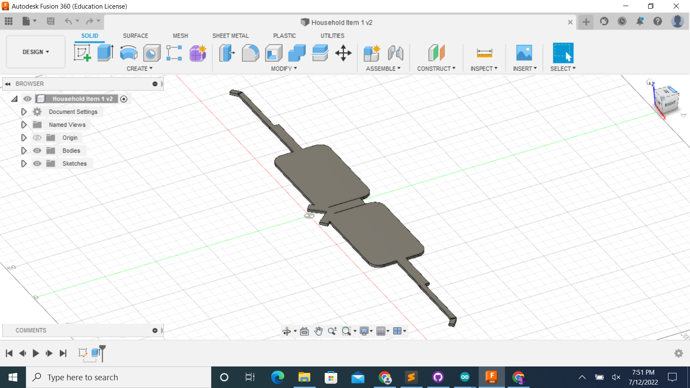

### Week 2
For week 2, I learned how to use Autodesk Fusion 360 and make designs that were laser cut into cardboard. The only stressful part about this assignment was that it took so long to download Fusion 360, but otherwise, it was kind of fun to see your designs come to life. You just have to be ready to put the time in.
I decided to make a sphere, and I got the reference from this website, and this is what their design looked like.
<img src="screenshot8.png" width="600" height="600">
Although this design is made out of wood, I wanted to replicate it with cardboard. Considering I made the CAD for this 30 minutes before they were opening the lab for laser cutting, I'm proud of myself for being able to take control of the situation and work on something I enjoyed making. These are the CAD designs I made.
<img src="screenshot9.png" width="600" height="600">
Accounting for the 0.6 mm kerf, I measured the cardboard I planned on counting from, and since it was 4.4 mm, I made the thickness of my pieces 3.8mm. This is a video of the laser cutting process.
<video controls>
<video controls width = "55%" height = "30%">s
<source src="videow2.mov" type="video/mp4">
</video>
An important mistake I made was that I didn't really account for how big the deepness of the space in the squares was compared to the thickness of the circular part. So that means that the circular part was way too small thickness wise. Since I was on a time crunch, I decided to just put three of the curves instead of one, because three of them made it work perfectly. However, that meant I had to make 36 of those pieces when I was only going to make 12. I did it though, and this is the final product. Also, the curve ended up being kind of long so it looks more like a cube.
<h1>Household Objects</h1>
<body>
For household objects, I decided to choose objects that are adound the machining room, and decided on googgles and a roll of tape. These are the pictures of the measurements.
<img src="goggles1.jpg" width="300" height="300">
<img src="goggles2.jpg" width="300" height="300">
<img src="goggles3.jpg" width="300" height="300">
<img src="goggles4.jpg" width="300" height="300">
<img src="tape2.jpg" width="300" height="300">
These are the final products for my design of them in Fusin 360. The only mistake I made was that I couldn't figure out how to raise the bottom of the tape to have more dimension.

</body>